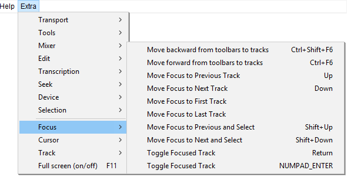

Extra Menu: Focus
From Audacity Development Manual
The Extra > Focus Menu provides provides access to extra commands for track focus that are not available in the default Audacity menus.
- Click, or hover, on any menu item in the image to read about that command. Skip the image
- 
Move backward from toolbars to tracks Ctrl+Shift+F6
Move backward through currently focused toolbar in Upper Toolbar dock area, Track View and currently focused toolbar in Lower Toolbar dock area. Each use moves the keyboard focus as indicated.
Move forward from toolbars to tracks Ctrl+F6
Move forward through currently focused toolbar in Upper Toolbar dock area, Track View and currently focused toolbar in Lower Toolbar dock area. Each use moves the keyboard focus as indicated.
Move Focus to Previous Track Up
Focus one track up
Move Focus to Next Track Down
Focus one track down
Move Focus to First Track Ctrl+Home Extra
Focus on first track
Move Focus to Last Track Ctrl+End Extra
Focus on last track
Move Focus to Previous and Select Shift+Up
Focus one track up and select it
Move Focus to Next and Select Shift+Down
Focus one track down and select it
Toggle Focused Track Return
Toggle focus on current track
Toggle Focused Track NUMPAD_ENTER
Toggle focus on current track